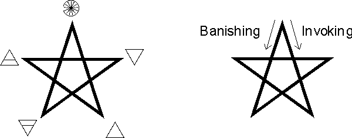

To Main Page
The Essential Skills of Magick
The Three Essential Skills
All effective magick stands on three
legs: imagination , emotion , and feeling; everything else - all the words and gestures, the
implements and costumes, the elaborate circles and furniture - serve only to reinforce and
focus these three capacities. If any of these three is lacking, then the work is likely to
fail; once you are skilled in using all three, you can dispense with practically all the
other things people sometimes insist are essential to the practice.
Of the three, emotion
is the power that drives the whole show; emotion from the guts, and from the heart. I will
go even further; it is not just emotion, but passion that is the power behind
magick. Passion in the sense of an intense desire to be connected to that which you are
seeking to invoke; a desire that places no restrictions or limits on the connection, but
which is so one-pointed that nothing save that which is sought is included within its
focus. And passion in the sense of a boundless enthusiasm for the acts by which you seek
to create that connection. Admittedly, this is the ideal case; but the closer you can get
to it, even for a few moments, the more likely your work is to be successful.
This passion-for-connection is what creates
the magickal link between the magician and that which he is
invoking; or, if the link already exists, expands it and strengthens it. The emotion
literally creates a channel or umbilicus between them, through which energy and knowledge
can flow in either direction. The stronger the emotion, the stronger the link becomes; the
less energy is lost in side-thoughts and distractions, the stronger the link becomes. Thus
a one-pointed focus is most desirable.
But conversely, restrictions the magician
places on the connection become constrictions in the link, reducing the potential flow of
power through it. If a magician insists that a spiritual force or being manifest itself in
a specific way, then it is less likely to appear, or the manifestation with be weaker. But
if his desire for connection is unconditional, then a response is much more likely, and
will be more powerful when it comes. Similarly, if a magician doing a ritual to obtain
money desires that money to appear in the form of a cashier's check, he is less likely to
obtain it than if he was willing to accept it in any form.
In its highest form, this unconditional
passion becomes almost indistinguishable from what is called "Divine Love",
which is the closest that one can come (within the worlds of manifestation) to the
transcendental state of the Mother aspect of divinity. Passion-for-connection transforms
into a state of pure relationship, pure Love, in which all distinctions are erased; both
the nature of the magician and the nature of that being invoked disappear, totally lost in
the link between them.
Imagination
provides the medium (rather, an opening to the medium) through which magick produces its
results. The personal imagination seems to blend seamlessly into the astral light, the
larger magickal universe; the point at which one becomes the other is impossible to define
clearly. An object that begins as a purely internal construct - created and sustained by
the imagination of a magician, propelled by the power of emotion - can move out into the
astral light and take on a life independent of its creator. It can gather or become a
container for magickal power, and act back on its creator (or on others) in ways that are
impossible for him to produce through his imagination alone. Conversely, beings and powers
operating on levels the magician cannot yet perceive can make themselves known to the him
through his receptive imagination, opening his awareness into new realms of experience.
The symbols used in magick are forms that,
when created in the imagination, tend to gather specific types of power from the astral
light, which are further limited by the intent of the magician. The shape of the
container, in effect, determines what can be put into it; the simpler, rigidly geometric
forms (such as the pentagram and hexagram) draw relatively pure, fundamental forces;
complex symbols - e.g., god-forms - draw correspondingly complex assemblages of forces.
When the magician projects the image of a
symbol onto his surroundings, an extended magickal space is created in which the astral
light becomes conditioned into conformity with the symbol. The area becomes more
attractive to the types of power invoked, more comfortable for magickal beings having the
nature represented by the symbol. The world of the powers and the world of the magician
then intersect, making interaction possible.
(A detailed series of practices for developing
the imagination and creating a general-purpose magickal space can be found in my article A Short Course in Scrying. This present paper is aimed towards
showing by example how it is used in formal rituals.)
Feeling is the third leg of the tripod, and the
final key to success in magick. In order to bring into being the conditions you desire,
you must create in yourself the sensations and feelings that the things you have created
through your imagination are real, and that the goal of the operation
has already been accomplished. In the magickal universe, when you act with all your
being as if something is already real, it becomes real. This feeling of reality is the
trigger that causes a symbol to move from the imagination into the astral light.
This key to magick is simply stated, but in
practice it seems to give the greatest difficulty for most people. The usual culprits are
intellectual doubts - "I know I am only imagining this" - and fears of various
sorts, e.g., "what if it makes me go crazy?" Both of these have to be ruthlessly
eliminated from the magician's consciousness for the duration of the operation. After the
work is completely over, you can be as doubtful and fear-ridden as you want; a certain
amount of doubt, of critical examination, is healthy and appropriate at that time. But
during the work, you must be completely focused on feeling (not thinking) that what you
create is real.
Some might be concerned that this
"believing makes it real" idea is actually a form of self-hypnosis, a way of
fooling oneself by reducing the critical faculties. A genuine success in performing the
ritual will dispose of this concern. At some point in the work a threshold is crossed; the
strength of the invocation produces an even stronger response from somewhere outside
yourself. Events in your magickal space take on a life of their own, at least partially
independent of your will. And - most significant - they begin to manifest an intensity,
richness and texture that it is utterly impossible for you to produce through your
imagination alone, no matter how adept you might be in its use. Once this has been
experienced even a skeptical mind must grant that the events are "real" in some
sense, even if not in the same way as mundane happenings.
So for magick to be successful, emotion must push a link outwards into the magickal universe, imagination must aim it towards the desired goal, and feeling must affirm the reality of that which is sought. Full
success will not come on the first try; for some people, not even on the fiftieth. It
takes time to condition the mind to the proper performance of these practices. But once a
single success is attained, additional successes follow at more frequent intervals.
The Golden Dawn's Pentagram Ritual
The Pentagram Ritual is an excellent
practice-piece for developing proficiency in these three essential skills. Its physical
and verbal elements are simple and easily memorized, enabling the student to give most of
his attention to the visualizations and the feelings attending them. But for all its
simplicity, it is capable of producing profound effects on the consciousness of the
magician. Performing it is also of long-term benefit; it purifies and strengthens the
magician's magickal body, and increases his general sensitivity to events in the magickal
universe.
Oddly, the most frequently referenced
descriptions of the Pentagram Ritual make almost no mention of its imagery and feeling
components. Perhaps in the Golden Dawn and Crowley's A:.A:., these were expected to be the
subject of verbal instruction, or were simply assumed to be too obvious to mention.
Regardless, it was the absence of such descriptions that prompted a student to request the
elaborated version of the ritual that follows.
The Pentagram is a symbol whose power is partly
innate, and partly a matter of the magician's intent. Its natural tendency (in the astral
light) is to attract a dynamic, active mix of the elemental forces; in contrast, the
equal-armed cross attracts the same forces but tends to keep them fixed and distinct from
each other. But when the Pentagram is used to invoke a specific element, the element is
determined largely by the magician's habitual methods of usage and his intent of the
moment. There are several methods of encoding the desired element in the way the Pentagram
is drawn; all of these are more or less arbitrary, and depend on consistent use and
practice to be effective.

Figure 1.
In modern magickal systems, it is customary to
associate the elements with the points of the Pentagram as shown in Figure 1. This set of
associations derives from the Golden Dawn, and was intended to reflect the positions of
the Elemental Tablets within the "Revised" Great Table of the Enochian magickal
system. Had they chosen to use the original version of the Great Table (as would seem more
appropriate, from more recent research) a substantially different set of associations
would result: Earth would be at the upper right point, Water at the lower right, and Fire
at the lower left.
Since the Golden Dawn associations have come
into general usage, it seems convenient to stay with them. The method of drawing invoking
and banishing Pentagrams is also arbitrary, and in this case, the Golden Dawn used a
method that is cumbersome, difficult to remember, and contains an undesirable dualism. To
replace it, I recommend the method used by the Aurum Solis, which is simple and
self-consistent. To draw an invoking Pentagram, draw clockwise from the point associated
with the desired element; to draw a banishing Pentagram, draw counterclockwise from the
same point.
In the Golden Dawn version of the ritual, the
magician is instructed to draw a pentagram of Earth in every quarter. The theory behind
this was that the element of Earth serves as container or receptacle for the other three
elements. This idea seems to derive from an old interpretation in which Fire, Water, and
Air were the true elements, and Earth merely something on which they acted. I feel it more
appropriate to use the pentagram of Spirit. Spirit contains all the other elements within
itself on an equal basis, and facilitates the transformations between them that make
possible activity and life in the manifest world; it is more truly "generic".
The Lesser Ritual of the Pentagram
The Opening.
- Stand in the center of the circle, feet together, facing
east. Using your thumb, touch the center of your forehead, and vibrate "Ateh."
As you say "Ateh,"
imagine a beam of light coming down from the heavens, and forming a sphere or dome of
brilliant white light, about nine inches across, above your head.
Note: Wherever a glowing sphere,
column, or line is mentioned it should appear like a neon light, transparent or
translucent with every point of its interior emanating light. Your body should be
perfectly "transparent" to all these images; that is, the lines and column
should pass through your body without being hindered by it in any way.
- Still using your thumb, gesture slowly down the centerline of
your body until your thumb is pointing at the ground between your feet.
As your gesture moves downwards,
imagine a column of white light about 3 inches thick, descending from the sphere through
the center of your body at the same rate of speed (as if you were "drawing" the
column with your gesture). Feel the column as being filled with a vibrating energy that
sets up a sympathetic vibration in your body wherever it passes.
Imagine the column of light
descending into the ground below your feet. Once there, it anchors itself in place and
forms another ball of light; this ball starts out a dark red, but quickly becomes brighter
and whiter as more energy feeds into it.
- Touch your right arm at the level of your heart and vibrate
"ve-Geburah."
Imagine a small sphere of light
forming where you touch.
As you move your hand, imagine
another line of white light being traced horizontally through the center of your body,
intersecting the vertical column about where your heart is. When the line reaches your
left arm, imagine another small ball of light forming there. Then imagine a flow of energy
back and forth between them. Feel that energy as it passes through your body, and begins
to produce a tingling sensation in your heart.
- Make a clockwise circle about 6" across around your
heart. Vibrate "le-Olahm."
As soon as you complete this
circle, imagine a big pink rose blooming inside it, with its stem at the intersection of
the horizontal and vertical lines of the cross. Feel the movements of its petals in your
heart as it unfolds. When it is completely unfolded, imagine a rose-pink radiance being
emitted from it in all directions. This radiance expands until it completely encloses the
cross and your body.
- Vibrate "Amen."
Bring your arms down to your sides, relax
as much as you can while still standing straight, and take a few moments to appreciate and
feel everything that you have visualized so far. You should generate in yourself a sense
of satisfaction with what you have done so far, and joy in the result.
- Let the above visualizations fade. Don't try to
"erase" them, just stop giving attention to their maintenance. If they continue
to exist without any effort on your part, that's fine. If they disappear, that's fine,
too.
Main Ceremony.
- Advance to the east point of the circle. Draw a large
pentagram with your wand, or with the pointed fingers of your hand.
The lines of all the pentagrams,
and the circle connecting them, should be seen in a blue-white color. They should have a
perceptible, three-dimensional thickness, at least equal to that of a clothesline or thin
rope.
Make a stabbing gesture at the center of
the pentagram with wand or hand, and vibrate "Yahweh."
As you vibrate the name, imagine
the inside of the pentagram becoming an open window into the Realms of Air. Beyond the
window, you should imagine some landscape that seems Airy to you. One image works
especially well for me: the view from a Tuscan hill town, the sky an almost painfully
brilliant blue, creating a dome so vast and seemingly deep that it dwarfs all the human
and natural features of the landscape into insignificance. The "Big Sky" of the
American Plains is a similar image. Whatever, you should feel that the landscape is filled
to overflowing with the force of Air, vast in extent, all-penetrating, and etherial.
Imagine that this realm extends to infinity in the direction you are facing.
Once you have the landscape
firmly visualized, imagine a cool wind blowing into your circle through the pentagram.
Feel the wind filling up the circle and blowing through your body and soul, leaving no
part of you untouched. It blows out and replaces the impure Airy elements of your own
nature with pure Airy power. Keep feeling this wind until you feel cleaned out and filled
with Airy power.
Note: If you are banishing, you
should next feel the power sweeping out of yourself and the circle, back through the
pentagram. After which you should imagine the "window" closing again. Same for
all the following quarters.
Take a few moments to stop and
appreciate whatever degree of Airyness you have managed to bring into the circle. Feel a
sense of satisfaction with it, and vow to make it even better the next time. Then stop
consciously supporting the images and feelings. At first they will fade, but with
continued practice you will find that a residual feeling of the element will remain in the
circle throughout the rest of the ceremony.
- Move clockwise around the circle until you come to the south.
Starting at the center of the eastern pentagram, draw a blue-white line as you go. Face
the south and draw a large pentagram. Make the stabbing gesture at the center of the
pentagram, and vibrate "Adonai."
Imagine the pentagram opening
into the Realms of Fire. The landscape you choose should present a feeling of intense,
radiant heat, like that you feel on your face from the Sun, only sourceless and
omnidirectional. An appropriate image might be Death Valley at noon, with shimmering waves
of heat filling space in all directions. Or the surface of the Sun -- ultimate,
incandescent heat. The landscape should feel full to bursting with the power of the
element, and feel like it extends to infinity in the direction you are facing.
When the landscape has been
firmly established, feel the heat rushing into your circle through the pentagram. Feel it
filling the circle and yourself, burning out any impurities and totally consuming them,
then replacing them with pure Fiery force. Continue until you feel completely purified by
the Fire and filled with its force.
Take a few moments to stop and
appreciate whatever degree of Fieryness you have managed to bring into the circle. Feel a
sense of satisfaction with it, and vow to make it even better the next time. Then stop
consciously supporting the images and feelings.
- Move clockwise to the west, drawing a segment of the circle
as you go. Face the west, and draw a large pentagram. Make the stabbing gesture at the
center of the pentagram, and vibrate "Eheieh."
Imagine the pentagram becoming a
window into the Realms of Water. Imagine a watery landscape. I use either an infinite
region filled with water of a deep, almost violet blue color; or an underwater view of a
reef with plenty of fish and plant life, and waves crossing the surface overhead.
With the landscape visualized,
imagine Water gushing into the circle and yourself, dissolving any impurities and diluting
them into nothingness, replacing them with its own pure power. Keep feeling this until you
feel clean and totally filled with Water.
Pause to appreciate the Watery
element you have managed to bring into the circle. Feel satisfaction with it, and know
that you can do even more the next time. Then stop consciously supporting the images.
- Move clockwise to the north, drawing the circle as you go.
Face the north, draw a large pentagram. Make the stabbing gesture at the center of the
pentagram and vibrate "AGLA."
Imagine the pentagram becoming a
window into the Realms of Earth, beyond which you can see some landscape that seems
supremely "Earthy" to you. I use either a soft, warm darkness of infinite
extent; a cave with ancient paintings on the walls; or cultivated land with all sorts of
food-crops growing. The emphasis should be on the fertility and potential for life hidden
in the darkness of the Earth, rather than the view of Earth as cold, sterile stone.
Imagine the Earthy power moving
through the pentagram, filling up the circle and penetrating your body, making any
impurities so inert and heavy that they fall downwards out of your body, to be replaced by
a pure earth force. Keep feeling this until you feel clean and totally filled with Earth.
As in the preceding quarters,
pause to appreciate the Earthy element you have managed to bring into the circle. Feel
satisfaction with it, and know that you can do even more the next time. Then stop
consciously supporting the images.
- Complete the circle by returning clockwise to the east,
drawing the line as you go. Return to the center of the circle and face east.
Standing in the center of the
circle, try to see all four landscapes at once, and feel the power of all four elements
focused on you through the pentagrams.
- Say: "Before me stands Raphael; behind me stands
Gabriel; on my right hand is Michael; on my left hand is Auriel." The names of the
archangels should be vibrated.
The angels should be imagined
appearing as their names are vibrated. Each should be seen as an immense figure on the
horizon beyond the landscape in their quarter. You should have a definite sense of them as
sapient, self-aware beings of great power, come to aid you in your work. The landscapes
represent the natural, non-sapient force of the elements; the archangels represent the
divine powers that rule and direct those elements.
The archangels should have some
form that signifies - in your mind - their rulership over their elements. I see them as
figures in robes the color of their elements. Raphael has blond hair that moves in an
invisible breeze; he holds a fan or dagger in his right hand pointed towards you. His face
has an aquiline cast. Gabriel has dark hair with a bluish cast, dark skin, and holds a
silver cup towards you. His robes seem to move in an invisible current. Michael has hair
and eyes like flames, a slightly fox-like cast to his face, and his robes seem to be made
of woven threads of fire. He holds a flaming sword pointed towards you. Auriel wears black
or green robes. His face is rounded, and of a nut-brown color. He holds a disk-like
pantacle with one face pointed towards you.
Imagine each of the archangels
sending a benediction to you through his weapon.
- Stand with your arms stretched out to the sides, and feet
apart. Say: "About me flame the pentagrams..."
See the four pentagrams and the
lines connecting them suddenly flaring to an intense brightness around you. As they do so,
imagine a fifth, equally bright pentagram forming about your body, its points congruent
with your head, hands, and feet. Remember that the pentagram signifies rulership of the
Spirit over the four elements, and that by identifying it you are claiming that rulership
for yourself. Try to feel yourself as Spirit, connected to the four elements, but also
above them.
Your mood as you say these words
should be one of triumph and exultation, a sense of complete success in the endeavor of
invoking the elements.
Imagine a large golden hexagram,
the same width as your circle, forming in the air above you. Rays of power shine radially
outwards from each of its points. The lowest point of the hexagram is congruent with the
highest point of the pentagram previously visualized.
The hexagram signifies the
planetary or "heavenly" realms that are above the worlds of the elements.
Elemental Spirit is a summation or concentration of these heavenly forces. By claiming the
power of the elemental Spirit, you are also declaring your freedom from the rule of the
mundane world, and claiming the right to enter into and work in those higher realms.
The Response.
- At this point, the invocation is effectively complete. You
have finished setting up the conditions for a response from the astral light; now you must
give that response a chance to occur. This is an utterly vital part of any invocation you
will ever do; you may get some response while performing the ritual, but the most
important, the most vital, revealing, and consciousness-expanding part of the response
nearly always takes place in the quiet time after the active work has ended.
You should now cease all active
visualizations, and assume a relaxed, comfortable position, standing or sitting. Silently
open yourself to the forces you have invoked, listen for them with your mind, your body,
and your aura. Don't do anything, and don't think about doing anything for a time; just
absorb your magickal environment as passively as a "couch potato" watching TV.
When it seems, after a while, as if
everything that is going to occur has occurred, do the ceremonial closing to complete the
session.
The Closing
- Repeat the "Cabalistic Cross" from steps 1 through
6.
Benjamin Rowe, Copyright
1999
|
|